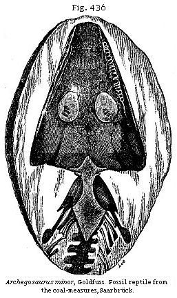
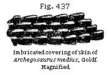
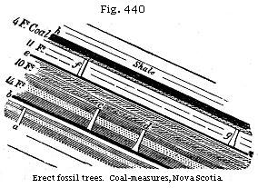
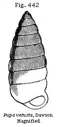
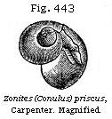
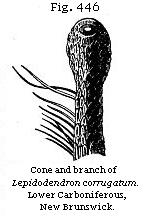

The Student’s Elements of Geology
Principal Subdivisions of the Carboniferous Group. — Different Thickness of the sedimentary and calcareous Members in Scotland and the South of England. — Coal-measures. — Terrestrial Nature of the Growth of Coal. — Erect fossil Trees. — Uniting of many Coal-seams into one thick Bed. — Purity of the Coal explained. — Conversion of Coal into Anthracite. — Origin of Clay-ironstone. — Marine and brackish-water Strata in Coal. — Fossil Insects. — Batrachian Reptiles. — Labyrinthodont Foot-prints in Coal-measures. — Nova Scotia Coal-measures with successive Growths of erect fossil Trees. — Similarity of American and European Coal. — Air-breathers of the American Coal. — Changes of Condition of Land and Sea indicated by the Carboniferous Strata of Nova Scotia.
Principal Subdivisions of the Carboniferous Group.—The next group which we meet with in the descending order is the Carboniferous, commonly called “The Coal,” because it contains many beds of that mineral, in a more or less pure state, interstratified with sandstones, shales, and limestones. The coal itself, even in Great Britain and Belgium, where it is most abundant, constitutes but an insignificant portion of the whole mass. In South Wales, for example, the thickness of the coal-bearing strata has been estimated at between 11,000 and 12,000 feet, while the various coal seams, about 80 in number, do not, according to Professor Phillips, exceed in the aggregate 120 feet.
The Carboniferous formation assumes various characters in different parts even of the British Islands. It usually comprises two very distinct members: first, the sedimentary beds, usually called the Coal-measures, of mixed fresh-water, terrestrial, and marine origin, often including seams of coal; second, that named in England the Mountain or Carboniferous Limestone, of purely marine origin, and made up chiefly of corals, shells, and encrinites, and resting on shales called the shales of the Mountain Limestone.
In the south-western part of our island, in Somersetshire and South Wales, the three divisions usually spoken of are:
If the reader will refer to the section in Fig. 85, he will see that the Upper and Lower Coal-measures of the coal-field near Bristol are divided by a micaceous flaggy sandstone called the Pennant Rock. The Lower Coal-measures of the same section rest sometimes, especially in the north part of the basin, on a base of coarse grit called the Millstone Grit (No. 2 on the previous page).
In the South Welsh coal-field Millstone Grit occurs in like manner at the base of the productive coal. It is called by the miners the “Farewell Rock,” as when they reach it they have no longer any hopes of obtaining coal at a greater depth in the same district. In the central and northern coal-fields of England this same grit, including quartz pebbles, with some accompanying sandstones and shales containing coal plants, acquires a thickness of several thousand feet, lying beneath the productive coal-measures, which are nearly 10,000 feet thick.
Below the Millstone Grit is a continuation of similar sandstones and shales called by Professor Phillips the Yoredale series, from Yoredale, in Yorkshire, where they attain a thickness of from 800 to 1000 feet. At several intervals bands of limestone divide this part of the series, one of which, called the Main Limestone or Upper Scar Limestone, composed in great part of encrinites, is 70 feet thick. Thin seams of coal also occur in these lower Yoredale beds in Yorkshire, showing that in the same region there were great alternations in the state of the surface. For at successive periods in the same area there prevailed first terrestrial conditions favourable to the growth of pure coal, secondly, a sea of some depth suited to the formation of Carboniferous Limestone, and, thirdly, a supply of muddy sediment and sand, furnishing the materials for sandstone and shale. There is no clear line of demarkation between the Coal-measures and the Millstone Grit, nor between the Millstone Grit and underlying Yoredale rocks.
On comparing a series of vertical sections in a north-westerly direction from Leicestershire and Warwickshire into North Lancashire, we find, says Mr. Hull, within a distance of 120 miles an augmentation of the sedimentary materials to the extent of 16,000 feet.
| Leicestershire and Warwickshire | 2,600 feet |
| North Staffordshire | 9,000 feet |
| South Lancashire | 12,130 feet |
| North Lancashire | 18,700 feet |
In central England, where the sedimentary beds are reduced to about 3000 feet in all, the Carboniferous Limestone attains an enormous thickness, as much as 4000 feet at Ashbourne, near Derby, according to Mr. Hull’s estimate. To a certain extent, therefore, we may consider the calcareous member of the formation as having originated simultaneously with the accumulation of the materials of grit, sandstone, and shale, with seams of coal; just as strata of mud, sand, and pebbles, several thousand feet thick, with layers of vegetable matter, are now in the process of formation in the cypress swamps and delta of the Mississippi, while coral reefs are forming on the coast of Florida and in the sea of the Bermuda islands. For we may safely conclude that in the ancient Carboniferous ocean those marine animals which were limestone builders were never freely developed in areas where the rivers poured in fresh water charged with sand or clay; and the limestone could only become several thousand feet thick in parts of the ocean which remained perfectly clear for ages.
The calcareous strata of the Scotch coal-fields, those of Lanarkshire, the Lothians, and Fife, for example, are very insignificant in thickness when compared to those of England. They consist of a few beds intercalated between the sandstones and shales containing coal and ironstone, the combined thickness of all the limestones amounting to no more than 150 feet. The vegetation of some of these northern sedimentary beds containing coal may be older than any of the coal-measures of central and southern England, as being coeval with the Mountain Limestone of the south. In Ireland the limestone predominates over the coal-bearing sands and shales. We may infer the former continuity of several of the coal-fields in northern and central England, not only from the abrupt manner in which they are cut off at their outcrop, but from their remarkable correspondence in the succession and character of particular beds. But the limited extent to which these strata are exposed at the surface is not merely owing to their former denudation, but even in a still greater degree to their having been largely covered by the New Red Sandstone, as in Cheshire, and here and there by the Permian strata, as in Durham.
It has long been the opinion of the most eminent geologists that the coal-fields of Yorkshire and Lancashire were once united, the upper Coal-measures and the overlying Millstone Grit and Yoredale rocks having been subsequently removed; but what is remarkable, is the ancient date now assigned to this denudation, for it seems that a thickness of no less than
10,000 feet of the coal-measures had been carried away before the deposition even of the lower Permian rocks which were thrown down upon the already disturbed truncated edges of the coal-strata.* The carboniferous strata most productive of workable coal have so often a basin-shaped arrangement that these troughs have sometimes been supposed to be connected with the original conformation of the surface upon which the beds were deposited. But it is now admitted that this structure has been owing to movements of the earth’s crust of upheaval and subsidence, and that the flexure and inclination of the beds has no connection with the original geographical configuration of the district.
I shall now treat more particularly of the productive coal-measures, and their mode of origin and organic remains.
Coal formed on Land.—In South Wales, already alluded to, where the coal-measures attain a thickness of 12,000 feet, the beds throughout appear to have been formed in water of moderate depth, during a slow, but perhaps intermittent, depression of the ground, in a region to which rivers were bringing a never-failing supply of muddy sediment and sand. The same area was sometimes covered with vast forests, such as we see in the deltas of great rivers in warm climates, which are liable to be submerged beneath fresh or salt water should the ground sink vertically a few feet.
In one section near Swansea, in South Wales, where the total thickness of strata is 3246 feet, we learn from Sir H. De la Beche that there are ten principal masses of sandstone. One of these is 500 feet thick, and the whole of them make together a thickness of 2125 feet. They are separated by masses of shale, varying in thickness from 10 to 50 feet. The intercalated coal-beds, sixteen in number, are generally from one to five feet thick, one of them, which has two or three layers of clay interposed, attaining nine feet. At other points in the same coal-field the shales predominate over the sandstones. Great as is the diversity in the horizontal extent of individual coal-seams, they all present one characteristic feature, in having, each of them, what is called its underclay. These underclays, co-extensive with every layer of coal, consist of arenaceous shale, sometimes called fire-stone, because it can be made into bricks which stand the fire of a furnace. They vary in thickness from six inches to more than ten feet; and Sir William Logan first announced to the scientific world in 1841 that they were regarded by the colliers in South
* Edward Hull, Quart. Geol. Journ., vol. xxiv, p. 327.
Wales as an essential accompaniment of each of the eighty or more seams of coal met with in their coal-field. They are said to form the floor on which the coal rests; and some of them have a slight admixture of carbonaceous matter, while others are quite blackened by it.
All of them, as Sir William Logan pointed out, are characterised by inclosing a peculiar species of fossil vegetable called Stigmaria, to the exclusion of other plants. It was also observed that, while in the overlying shales, or “roof” of the coal, ferns and trunks of trees abound without any Stigmariæ, and are flattened and compressed, those singular plants of the underclay most commonly retain their natural forms, unflattened and branching freely, and sending out their slender rootlets, formerly thought to be leaves, through the mud in all directions. Several species of Stigmaria had long been known to botanists, and described by them, before their position under each seam of coal was pointed out, and before their true nature as the roots of trees (some having been actually found attached to the base of Sigillaria stumps) was recognised. It was conjectured that they might be aquatic, perhaps floating plants, which sometimes extended their branches and leaves freely in fluid mud, in which they were finally enveloped.
Now that all agree that these underclays are ancient soils, it follows that in every instance where we find them they attest the terrestrial nature of the plants which formed the overlying coal, which consists of the trunks, branches, and leaves of the same plants. The trunks have generally fallen prostrate in the coal, but some of them still remain at right angles to the ancient soils (see Fig. 440). Professor Goppert, after examining the fossil vegetables of the coal-fields of Germany, has detected, in beds of pure coal, remains of plants of every family hitherto known to occur fossil in the carboniferous rocks. Many seams, he remarks, are rich in Sigillariæ, Lepidodendra, and Stigmariæ, the latter in such abundance as to appear to form the bulk of the coal. In some places, almost all the plants were calamites, in others ferns.*
Between the years 1837 and 1840, six fossil trees were discovered in the coal-fields of Lancashire, where it is intersected by the Bolton railway. They were all at right angles to the plane of the bed, which dips about 15 degrees to the south. The distance between the first and the last was more than 100 feet, and the roots of all were imbedded in a soft argillaceous shale. In the same plane with the roots is a bed of
* Quart. Geol. Journ., vol. v, Mem., p. 17.
coal, eight or ten inches thick, which has been found to extend across the railway, or to the distance of at least ten yards. Just above the covering of the roots, yet beneath the coal-seam, so large a quantity of the Lepidostrobus variabilis was discovered inclosed in nodules of hard clay, that more than a bushel was collected from the small openings around the base of some of the trees (see Fig. 457 of this genus). The exterior trunk of each was marked by a coating of friable coal, varying from one-quarter to three-quarters of an inch in thickness; but it crumbled away on removing the matrix. The dimensions of one of the trees is 15½ feet in circumference at the base, 7½ feet at the top, its height being eleven feet. All the trees have large spreading roots, solid and strong, sometimes branching, and traced to a distance of several feet, and presumed to extend much farther.
In a colliery near Newcastle a great number of Sigillariæ occur in the rock as if they had retained the position in which they grew. No less than thirty, some of them four or five feet in diameter, were visible within an area of 50 yards square, the interior being sandstone, and the bark having been converted into coal. Such vertical stems are familiar to our coal-miners, under the name of coal-pipes. They are much dreaded, for almost every year in the Bristol, Newcastle, and other coal-fields, they are the cause of fatal accidents. Each cylindrical cast of a tree, formed of solid sandstone, and increasing gradually in size towards the base, and being without branches, has its whole weight thrown downward, and receives no support from the coating of friable coal which has replaced the bark. As soon, therefore, as the cohesion of this external layer is overcome, the heavy column falls suddenly in a perpendicular or oblique direction from the roof of the gallery whence coal has been extracted, wounding or killing the workman who stands below. It is strange to reflect how many thousands of these trees fell originally in their native forests in obedience to the law of gravity; and how the few which continued to stand erect, obeying, after myriads of ages, the same force, are cast down to immolate their human victims.
It has been remarked that if, instead of working in the dark, the miner was accustomed to remove the upper covering of rock from each seam of coal, and to expose to the day the soils on which ancient forests grew, the evidence of their former growth would be obvious. Thus in South Staffordshire a seam of coal was laid bare in the year 1844, in what is called an open work at Parkfield colliery, near Wolverhampton. In the space of about a quarter of an acre the
stumps of no less than 73 trees with their roots attached appeared, as shown in Fig. 429, some of them more than eight feet in circumference. The trunks, broken off close to the root, were lying prostrate in every direction, often crossing each other. One of them measured 15, another 30 feet in length, and others less. They were invariably flattened to the thickness of one or two inches, and converted into coal. Their roots formed part of a stratum of coal ten inches thick, which rested on a layer of clay two inches thick, below which was a second forest resting on a two-foot seam of coal. Five feet below this, again, was a third forest with large stumps of Lepidodendra, Calamites, and other trees.
Blending of Coal-seams.—Both in England and North America seams of coal are occasionally observed to be parted from each other by layers of clay and sand, and, after they have been persistent for miles, to come together and blend in one single bed, which is then found to be equal in the aggregate to the thickness of the several seams. I was shown by Mr. H. D. Rogers a remarkable example of this in Pennsylvania. In the Shark Mountain, near Pottsville, in that State, there are thirteen seams of anthracite coal, some of them more than six feet thick, separated by beds of white quartzose grit and a conglomerate of quartz pebbles, often of the size of a hen’s egg. Between Pottsville and the Lehigh Summit Mine, seven of these seams of coal, at first widely separated, are, in the course of several miles, brought nearer and nearer together by the gradual thinning out of the intervening coarse-grained strata and their accompanying shales, until at length they successively unite and form one mass of coal between forty and fifty feet thick, very pure on the whole, though with a few thin partings of clay. This mass of coal I saw quarried in the open air at Mauch
Chunk, on the Bear Mountain. The origin of such a vast thickness of vegetable remains, so unmixed, on the whole, with earthy ingredients, can be accounted for in no other way than by the growth, during thousands of years, of trees and ferns in the manner of peat—a theory which the presence of the Stigmaria in situ under each of the seven layers of anthracite fully bears out. The rival hypothesis, of the drifting of plants into a sea or estuary, leaves the non-intermixture of sediment, or of clay, sand, and pebbles, with the pure coal wholly unexplained.
The late Mr. Bowman was the first who gave a satisfactory explanation of the manner in which distinct coal-seams, after maintaining their independence for miles, may at length unite, and then persist throughout another wide area with a thickness equal to that which the separate seams had previously maintained.
Let A C (Fig. 430) be a three-foot seam of coal originally laid down as a mass of vegetable matter on the level area of an extensive swamp, having an under-clay, f g, through which the Stigmariæ or roots of the trees penetrate as usual. One portion, B C, of this seam of coal is now inclined; the area of the swamp having subsided as much as 25 feet at E C, and become for a time submerged under salt, fresh, or brackish water. Some of the trees of the original forest A B C fell down, others continued to stand erect in the new lagoon, their stumps and part of their trunks becoming gradually enveloped in layers of sand and mud, which at length filled up the new piece of water C E.
When this lagoon has been entirely silted up and converted into land, the forest-covered surface A B will extend once more over the whole area A B E, and a second mass of vegetable matter, D E, forming three feet more of coal, will accumulate. We then find in the region E C two seams of coals, each three feet thick, with their respective under-clays, with erect buried trees based upon the surface of the lower coal, the two seams being separated by 25 feet of intervening shale and sandstone. Whereas in the region A B, where the growth of the forest has never been interrupted by submergence, there will simply be one seam, two yards thick, corresponding to the united thickness of the beds B E and
B C. It may be objected that the uninterrupted growth of plants during the interval of time required for the filling up of the lagoon will have caused the vegetable matter in the region D A B to be thicker than the two distinct seams E and C, and no doubt there would actually be a slight excess representing one or more generation of trees and plants forming the undergrowth; but this excess of vegetable matter, when compressed into coal, would be so insignificant in thickness that the miner might still affirm that the seam D A throughout the area D A B was equal to the two seams C and E.
Cause of the Purity of Coal.—The purity of the coal itself, or the absence in it of earthy particles and sand, throughout areas of vast extent, is a fact which appears very difficult to explain when we attribute each coal-seam to a vegetation growing in swamps. It has been asked how, during river inundations capable of sweeping away the leaves of ferns and the stems and roots of Sigillariæ and other trees, could the waters fail to transport some fine mud into the swamps? One generation after another of tall trees grew with their roots in mud, and their leaves and prostrate trunks formed layers of vegetable matter, which was afterwards covered with mud since turned to shale. Yet the coal itself, or altered vegetable matter, remained all the while unsoiled by earthy particles. This enigma, however perplexing at first sight, may, I think, be solved by attending to what is now taking place in deltas. The dense growth of reeds and herbage which encompasses the margins of forest-covered swamps in the valley and delta of the Mississippi is such that the fluviatile waters, in passing through them, are filtered and made to clear themselves entirely before they reach the areas in which vegetable matter may accumulate for centuries, forming coal if the climate be favourable. There is no possibility of the least intermixture of earthy matter in such cases. Thus in the large submerged tract called the “Sunk Country,” near New Madrid, forming part of the western side of the valley of the Mississippi, erect trees have been standing ever since the year 1811-12, killed by the great earthquake of that date; lacustrine and swamp plants have been growing there in the shallows, and several rivers have annually inundated the whole space, and yet have been unable to carry in any sediment within the outer boundaries of the morass, so dense is the marginal belt of reeds and brush-wood. It may be affirmed that generally, in the “cypress swamps” of the Mississippi, no sediment mingles with the vegetable matter accumulated there from the decay of trees and semi-aquatic plants. As a singular proof of this
fact, I may mention that whenever any part of a swamp in Louisiana is dried up, during an unusually hot season, and the wood set on fire, pits are burnt into the ground many feet deep, or as far down as the fire can descend without meeting with water, and it is then found that scarcely any residuum or earthy matter is left. At the bottom of all these “cypress swamps” a bed of clay is found, with roots of the tall cypress (Taxodium distichum), just as the under-clays of the coal are filled with Stigmaria.
Conversion of Coal into Anthracite.—It appears from the researches of Liebig and other eminent chemists, that when wood and vegetable matter are buried in the earth exposed to moisture, and partially or entirely excluded from the air, they decompose slowly and evolve carbonic acid gas, thus parting with a portion of their original oxygen. By this means they become gradually converted into lignite or wood-coal, which contains a larger proportion of hydrogen than wood does. A continuance of decomposition changes this lignite into common or bituminous coal, chiefly by the discharge of carbureted hydrogen, or the gas by which we illuminate our streets and houses. According to Bischoff, the inflammable gases which are always escaping from mineral coal, and are so often the cause of fatal accidents in mines, always contain carbonic acid, carbureted hydrogen, nitrogen, and olefiant gas. The disengagement of all these gradually transforms ordinary or bituminous coal into anthracite, to which the various names of glance-coal, coke, hard-coal, culm, and many others, have been given.
There is an intimate connection between the extent to which the coal has in different regions parted with its gaseous contents, and the amount of disturbance which the strata have undergone. The coincidence of these phenomena may be attributed partly to the greater facility afforded for the escape of volatile matter, when the fracturing of the rocks has produced an infinite number of cracks and crevices. The gases and water which are made to penetrate these cracks are probably rendered the more effective as metamorphic agents by increased temperature derived from the interior. It is well known that, at the present period, thermal waters and hot vapours burst out from the earth during earthquakes, and these would not fail to promote the disengagement of volatile matter from the Carboniferous rocks.
In Pennsylvania the strata of coal are horizontal to the westward of the Alleghany Mountains, where the late Professor H. D. Rogers pointed out that they were most
bituminous; but as we travel south-eastward, where they no longer remain level and unbroken, the same seams become progressively debitumenized in proportion as the rocks become more bent and distorted. At first, on the Ohio River, the proportion of hydrogen, oxygen, and other volatile matters ranges from forty to fifty per cent. Eastward of this line, on the Monongahela, it still approaches forty per cent, where the strata begin to experience some gentle flexures. On entering the Alleghany Mountains, where the distinct anticlinal axes begin to show themselves, but before the dislocations are considerable, the volatile matter is generally in the proportion of eighteen or twenty per cent. At length, when we arrive at some insulated coal-fields associated with the boldest flexures of the Appalachian chain, where the strata have been actually turned over, as near Pottsville, we find the coal to contain only from six per cent of volatile matter, thus becoming a genuine anthracite.
Clay-ironstone.—Bands and nodules of clay-ironstone are common in coal-measures, and are formed, says Sir H. De la Beche, of carbonate of iron mingled mechanically with earthy matter, like that constituting the shales. Mr. Hunt, of the Museum of Practical Geology, instituted a series of experiments to illustrate the production of this substance, and found that decomposing vegetable matter, such as would be distributed through all coal strata, prevented the further oxidation of the proto-salts of iron, and converted the peroxide into protoxide by taking a portion of its oxygen to form carbonic acid. Such carbonic acid, meeting with the protoxide of iron in solution, would unite with it and form a carbonate of iron; and this mingling with fine mud, when the excess of carbonic acid was removed, might form beds or nodules of argillaceous ironstone.*
Intercalated Marine Beds in Coal.—Both in the coal-fields of Europe and America the association of fresh, brackish-water, and marine strata with coal-seams of terrestrial origin is frequently recognised. Thus, for example, a deposit near Shrewsbury, probably formed in brackish water, has been described by Sir R. Murchison as the youngest member of the coal-measures of that district, at the point where they are in contact with the overlying Permian group. It consists of shales and sandstones about 150 feet thick, with coal and traces of plants; including a bed of limestone varying from two to nine feet in thickness, which is cellular, and resembles some lacustrine limestones of France and Germany. It has been traced for 30 miles in a straight line, and can be recognised
* Memoirs of the Geol. Survey, pp. 51, 255, etc.
at still more distant points. The characteristic fossils are a small bivalve, having the form of a Cyclas or Cyrena, also a small entomostracan, Cythere inflata (Fig. 432), and the microscopic shell of an annelid of an extinct genus called Microconchus (Fig. 431), allied to Spirorbis. In the coal-field of Yorkshire there are fresh-water strata, some of which contain shells referred to the family Unionidæ; but in the midst of the series there is one thin but very widely-spread stratum, abounding in fishes and marine shells, such as Goniatites Listeri (Fig. 433), Orthoceras, and Aviculopecten papyraceus, Goldf. (Fig. 434).
Insects in European Coal.—Articulate animals of the genus Scorpion were found by Count Sternberg in 1835 in the coal-measures of Bohemia, and about the same time in those of Coalbrook Dale by Mr. Prestwich, were also true insects, such as beetles of the family Curculionidæ, a neuropterous insect of the genus Corydalis, and another related to the Phasmidæ, have been found.
From the coal of Wetting, in Westphalia, several specimens
of the cockroach or Blatta family, and the wing of a cricket (Acridites) have been described by Germar. Professor Goldenberg published, in 1854, descriptions of no less than twelve species of insects from the nodular clay-ironstone of Saarbrück, near Trèves.* Among them are several Blattinæ, three species of Neuroptera, one beetle of the Scarabæus family, a grasshopper or locust, Gryllacris (see Fig. 435), and several white ants or Termites. Professor Goldenberg showed me, in 1864, the wing of a white ant, found low down in the productive coal-measures of Saarbrück, in the interior of a flattened Lepidodendron. It is much larger than that of any known living species of the same genus.
Batrachian Reptiles in Coal.—No vertebrated animals more highly organised than fish were known in rocks of higher antiquity than the Permian until the year 1844, when the Apateon pedestris, Meyer, was discovered in the coal-measures of Munster-Appel in Rhenish Bavaria, and three years later, in 1847, Professor von Dechen found three other distinct species of the same family of Amphibia in the Saarbruck coal-field above alluded to. These were described by the late Professor Goldfuss under the generic name of Archegosaurus. The skulls, teeth, and the greater portions of the skeleton, nay, even a large part of the skin, of two of these reptiles have been faithfully preserved in the centre of spheroidal concretions of clay-ironstone. The largest of these, Archegosaurus Decheni, must
* Dunker and V. Meyer, Palæont., vol. iv, p. 17.
have been three feet six inches long. Figure 436 represents the skull and neck bones of the smallest of the three, of the natural size. They were considered by Goldfuss as saurians, but by Herman von Meyer as most nearly allied to the Labyrinthodon before mentioned (p. 371), and the remains of the extremities leave no doubt they were quadrupeds, “provided,” says Von Meyer, “with hands and feet terminating in distinct toes; but these limbs were weak, serving only for swimming or creeping.” The same anatomist has pointed out certain points of analogy between their bones and those of the Proteus anguinus; and Professor Owen has observed that they make an approach to the Proteus in the shortness of their ribs. Two specimens of these ancient reptiles retain a large part of the outer skin, which consisted of long, narrow, wedge-shaped, tile-like, and horny scales, arranged in rows (see Fig. 437).
In 1865, several species belonging to three different genera of the same family of perennibranchiate Batrachians were found in the coal-field of Kilkenny in bituminous shale at the junction of the coal with the underlying Stigmaria-bearing clay. They were, probably, inhabitants of a marsh, and the large processes projecting from the vertebræ of their tail imply, according to Professor Huxley, great powers of swimming. They were of the Labyrinthodont family, and their association with the fish of the coal, of which so large a proportion are ganoids, reminds us that the living perennibranchiate amphibia of America frequent the same rivers as the ganoid Lepidostei or bony pikes.
Labyrinthodont footprints in coal-measures.—In 1844, the very year when the Apateon, before mentioned, of the coal was first met with in the country between the Moselle and the Rhine, Dr. King published an account of the footprints of a large reptile discovered by him in North America. These occur in the coal-strata of Greensburg, in Westmoreland County, Pennsylvania; and I had an opportunity of examining them when in that country in 1846. The footmarks were first observed standing out in relief from the lower surface of slabs of sandstone, resting on thin layers of fine unctuous clay. I brought away one of these masses, which is represented in Fig. 438. It displays, together with footprints, the casts of cracks (a, a') of various sizes. The origin of such cracks in
clay, and casts of the same, has before been explained, and referred to the drying and shrinking of mud, and the subsequent pouring of sand into open crevices. It will be seen that some of the cracks, as at b, c, traverse the footprints, and produce distortion in them, as might have been expected, for the mud must have been soft when the animal walked over it and left the impressions; whereas, when it afterwards dried up and shrank, it would be too hard to receive such indentations.
We may assume that the reptile which left these prints
on the ancient sands of the coal-measures was an air-breather, because its weight would not have been sufficient under water to have made impressions so deep and distinct. The same conclusion is also borne out by the casts of the cracks above described, for they show that the clay had been exposed to the air and sun, so as to have dried and shrunk.
Nova Scotia Coal-measures.—The sedimentary strata in which thin seams of coal occur attain a thickness, as we have seen, of 18,000 feet in the north of England exclusive of the Mountain Limestone, and are estimated by Von Dechen at over 20,000 feet in Rhenish Prussia. But the finest example in the world of a natural exposure in a continuous section ten miles long, occurs in the sea-cliffs bordering a branch of the Bay of Fundy, in Nova Scotia. These cliffs, called the “South Joggins,” which I first examined in 1842, and afterwards with Dr. Dawson in 1845, have lately been admirably described by the last-mentioned geologist* in detail, and his evidence is most valuable as showing how large a portion of this dense mass was formed on land, or in swamps where terrestrial vegetation flourished, or in fresh-water lagoons. His computation of the thickness of the whole series of carboniferous strata as exceeding three miles, agrees with the measurement made independently by Sir William Logan in his survey of this coast.
There is no reason to believe that in this vast succession of strata, comprising some marine as well as many fresh-water and terrestrial formations, there is any repetition of the same beds. There are no faults to mislead the geologist, and cause him to count the same beds over more than once, while some of the same plants have been traced from the top to the bottom of the whole series, and are distinct from the flora of the antecedent Devonian formation of Canada. Eighty-one seams of coal, varying in thickness from an inch to about five feet, have been discovered, and no less than seventy-one of these have been actually exposed in the sea-cliffs.
In the section (Fig. 439), which I examined in 1842, the beds from c to i are seen all dipping the same way, their average inclination being at an angle of 24° S.S.W. The vertical height of the cliffs is from 150 to 200 feet; and between d and g—in which space I observed seventeen trees in an upright position, or, to speak more correctly, at right angles to the planes of stratification—I counted nineteen seams of coal, varying in thickness from two inches to four feet. At low tide a fine horizontal section of the same beds is exposed to view on the beach, which at low tide extends sometimes 200
* Acadian Geology, 2nd edit., 1868.
yards from the base of the cliff. The thickness of the beds alluded to, between d and g, is about 2500 feet, the erect trees consisting chiefly of large Sigillariæ, occurring at ten distinct levels, one above the other. The usual height of the buried trees seen by me was from six to eight feet; but one trunk was about 25 feet high and four feet in diameter, with a considerable bulge at the base. In no instance could I detect any trunk intersecting a layer of coal, however thin; and most of the trees terminated downward in seams of coal. Some few only were based on clay and shale; none of them, except Calamites, on sandstone. The erect trees, therefore, appeared in general to have grown on beds of vegetable matter. In the underclays Stigmaria abounds.
These root-bearing beds have been found under all the coal-seams, and such old soils are at present the most destructible masses in the whole cliff, the sandstones and laminated shales being harder and more capable of resisting the action of the waves and the weather. Originally the reverse was doubtless true, for in the existing delta of the Mississippi those clays in which the innumerable roots of the deciduous cypress and other swamp trees ramify in all directions are seen to withstand far more effectually the undermining power of the river, or of the sea at the base of the delta, than do beds of loose sand or layers of mud not supporting trees. It is obvious that if this sand or mud be afterwards consolidated and turned to sandstone and hard shale, it would be the least destructible.
In regard to the plants, they belonged to the same genera, and most of them to the same species, as those met with in the distant coal-fields of Europe. Dr. Dawson has enumerated more than 150 species, two-thirds of which are European, a greater agreement than can be said to exist between the same Nova Scotia flora and that of the coal-fields of the United States. By referring to the section, Fig. 439, the position of the four-foot coal will be perceived, and in Fig. 440 (a section made by me in 1842 of a small portion) that from e to f
of the same cliff is exhibited, in order to show the manner of occurrence of erect fossil trees at right angles to the planes of the inclined strata.
In the sandstone which filled their interiors, I frequently observed fern-leaves, and sometimes fragments of Stigmaria, which had evidently entered together with sediment after the trunk had decayed and become hollow, and while it was still standing under water. Thus the tree, a, Fig. 440, represented in the bed e in the section, Fig. 439, is a hollow trunk five feet eight inches in length, traversing various strata, and cut off at the top by a layer of clay two feet thick, on which rests a seam of coal (b, Fig. 440) one foot thick. On this coal again stood two large trees (c and d), while at a greater height the trees f and g rest upon a thin seam of coal (e), and above them is an underclay, supporting the four-foot coal.
Occasionally the layers of matter in the inside of the tree are more numerous than those without; but it is more common in the coal-measures of all countries to find a cylinder of pure sandstone—the cast of the interior of a tree—intersecting a great many alternating beds of shale and sandstone, which originally enveloped the trunk as it stood erect in the water. Such a want of correspondence in the materials outside and inside, is just what we might expect if we reflect on the difference of time at which the deposition of sediment will take place in the two cases; the imbedding of the tree having gone on for many years before its decay had made much progress. In many places distinct proof is seen that the enveloping strata took years to accumulate, for some of the sandstones surrounding erect sigillarian trunks support at different levels roots and stems of Calamites; the Calamites having begun to grow after the older Sigillariæ had been partially buried.
The general absence of structure in the interior of the large fossil trees of the Coal implies the very durable nature of their bark, as compared with their woody portion. The
same difference of durability of bark and wood exists in modern trees, and was first pointed out to me by Dr. Dawson, in the forests of Nova Scotia, where the Canoe Birch (Betula papyracea) has such tough bark that it may sometimes be seen in the swamps looking externally sound and fresh, although consisting simply of a hollow cylinder with all the wood decayed and gone. When portions of such trunks have become submerged in the swamps they are sometimes found filled with mud. One of the erect fossil trees of the South Joggins fifteen feet in height, occurring at a higher level than the main coal, has been shown by Dr. Dawson to have a coniferous structure, so that some Coniferæ of the Coal period grew in the same swamps as Sigillariæ, just as now the deciduous Cypress (Taxodium distichum) abounds in the marshes of Louisiana even to the edge of the sea.
When the carboniferous forests sank below high-water mark, a species of Spirorbis or Serpula (Fig. 431), attached itself to the outside of the stumps and stems of the erect trees, adhering occasionally even to the interior of the bark—another proof that the process of envelopment was very gradual. These hollow upright trees, covered with innumerable marine annelids, reminded me of a “cane-brake,” as it is commonly called, consisting of tall reeds, Arundinaria macrosperma, which I saw in 1846, at the Balize, or extremity of the delta of the Mississippi. Although these reeds are fresh-water plants, they were covered with barnacles, having been killed by an incursion of salt-water over an extent of many acres, where the sea had for a season usurped a space previously gained from it by the river. Yet the dead reeds, in spite of this change, remained standing in the soft mud, enabling us to conceive how easily the larger Sigillariæ, hollow as they were but supported by strong roots, may have resisted an incursion of the sea.
The high tides of the Bay of Fundy, rising more than 60 feet, are so destructive as to undermine and sweep away continually the whole face of the cliffs, and thus a new crop of erect fossil trees is brought into view every three or four years. They are known to extend over a space between two and three miles from north to south, and more than twice that distance from east to west, being seen in the banks of streams intersecting the coal-field.
Structure of Coal.—The bituminous coal of Nova Scotia is similar in composition and structure to that of Great Britain, being chiefly derived from sigillarioid trees mixed with leaves of ferns and of a Lycopodiaceous tree called Cordaites
(Noeggerathia, etc., for genus, see Fig. 428), supposed by Dawson to have been deciduous, and which had broad parallel veined leaves without a mid-rib. On the surface of the seams of coal are large quantities of mineral charcoal, which doubtless consist, as Dr. Dawson suggests, of fragments of wood which decayed in the open air, as would naturally be expected in swamps where so many erect trees were preserved. Beds of cannel-coal display, says Dr. Dawson, such a microscopical structure and chemical composition as shows them to have been of the nature of fine vegetable mud such as accumulates in the shallow ponds of modern swamps. The underclays are loamy soils, which must have been sufficiently above water to admit of drainage, and the absence of sulphurets, and the occurrence of carbonate of iron in them, prove that when they existed as soils, rain-water, and not sea-water, percolated them. With the exception, perhaps, of Asterophyllites (see Fig. 461), there is a remarkable absence from the coal-measures of any form of vegetation properly aquatic, the true coal being a sub-aërial accumulation in soil that was wet and swampy but not permanently submerged.
Air-breathers of the Coal.—If we have rightly interpreted the evidence of the former existence at more than eighty different levels of forests of trees, some of them of vast extent, and which lasted for ages, giving rise to a great accumulation of vegetable matter, it is natural to ask whether there were not many air-breathing inhabitants of these same regions. As yet no remains of mammalia or birds have been found, a negative character common at present to all the Palæozoic formations; but in 1852 the osseous remains of a reptile, the first ever met with in the carboniferous strata of the American continent, were found by Dr. Dawson and myself. We detected them in the interior of one of the erect Sigillariæ before alluded to as of such frequent occurrence in Nova Scotia. The tree was about two feet in diameter, and consisted of an external cylinder of bark, converted into coal, and an internal stony axis of black sandstone, or rather mud and sand stained black by carbonaceous matter, and cemented together with fragments of wood into a rock. These fragments were in the state of charcoal, and seem to have fallen to the bottom of the hollow tree while it was rotting away. The skull, jaws, and vertebræ of a reptile, probably about 2½ feet in length (Dendrerpeton Acadianum, Owen), were scattered through this stony matrix. The shell, also, of a Pupa (see Fig. 442), the first land-shell ever met with in the coal or in beds older than the tertiary, was observed in the
same stony mass. Dr. Wyman of Boston pronounced the reptile to be allied in structure to Menobranchus and Menopoma, species of batrachians, now inhabiting the North American rivers. The same view was afterwards confirmed by Professor Owen, who also pointed out the resemblance of the cranial plates to those seen in the skull of Archegosaurus and Labyrinthodon.* Whether the creature had crept into the hollow tree while its top was still open to the air, or whether it was washed in with mud during a flood, or in whatever other manner it entered, must be matter of conjecture.
Footprints of two reptiles of different sizes had previously been observed by Dr. Harding and Dr. Gesner on ripple-marked flags of the lower coal-measures in Nova Scotia (No. 2, Fig. 447), evidently made by quadrupeds walking on the ancient beach, or out of the water, just as the recent Menopoma is sometimes observed to do. The remains of a second and smaller species of Dendrerpeton, D. Oweni, were also found accompanying the larger one, and still retaining some of its dermal appendages; and in the same tree were the bones of a third small lizard-like reptile, Hylonomus Lyelli, seven inches long, with stout hind limbs, and fore limbs comparatively slender, supposed by Dr. Dawson to be capable of walking and running on land.†
In a second specimen of an erect stump of a hollow tree 15 inches in diameter, the ribbed bark of which showed that it was a Sigillaria, and which belonged to the same forest as the specimen examined by us in 1852, Dr. Dawson obtained not only fifty specimens of Pupa vetusta (Fig. 442), and nine skeletons of reptiles belonging to four species, but also several examples of an articulated animal resembling the recent centipede or gally-worm, a creature which feeds on decayed vegetable matter (see Fig. 441). Under the microscope, the
* Quart. Geol. Journ., vol. ix, p. 58.
† Dawson, Air-Breathers of the Coal in Nova Scotia,
Montreal, 1863.
head, with the eyes, mandible, and labrum, are well seen. It is interesting, as being the earliest known representative of the myriapods, none of which had previously been met with in rocks older than the oolite or lithographic slate of Germany.
Some years after the discovery of the first Pupa, Dr. Dawson, carefully examining the same great section containing so many buried forests in the cliffs of Nova Scotia, discovered another bed, separated from the tree containing Dendrerpeton by a mass of strata more than 1200 feet thick. As there were 21 seams of coal in this intervening mass, the length of time comprised in the interval is not to be measured by the mere thickness of the sandstones and shales. This lower bed is an underclay seven feet thick, with stigmarian rootlets, and the small land-shells occurring in it are in all stages of growth. They are chiefly confined to a layer about two inches thick, and are unmixed with any aquatic shells. They were all originally entire when imbedded, but are most of them now crushed, flattened, and distorted by pressure; they must have been accumulated, says Dr. Dawson, in mud deposited in a pond or creek.
The surface striæ of Pupa vetusta, when magnified 50 diameters, present exactly the same appearance as a portion corresponding in size of the common English Pupa juniperi, and the internal hexagonal cells, magnified 500 diameters, show the internal structure of the fossil and recent Pupa to be identical. In 1866* Dr. Dawson discovered in this lower bed, so full of the Pupa, another land-shell of the genus Helix (sub-genus Zonites), see Fig. 443.
None of the reptiles obtained from the coal-measures of the South Joggins are of a higher grade than the Labyrinthodonts, but some of these were of very great size, two caudal vertebræ found by Mr. Marsh in 1862 measuring two and a half inches in diameter, and implying a gigantic aquatic reptile with a powerful swimming tail.
Except some obscure traces of an insect found by Dr.
* Dawson, Acadian Geology, 1868, p. 385.
Dawson in a coprolite of a terrestrial reptile occurring in a fossil tree, no specimen of this class has been brought to light in the Joggins. But Mr. James Barnes found in a bed of shale at Little Grace Bay, Cape Breton, the wing of an Ephemera, which must have measured seven inches from tip to tip of the expanded wings—larger than any known living insect of the Neuropterous family.
That we should have made so little progress in obtaining a knowledge of the terrestrial fauna of the Coal is certainly a mystery, but we have no reason to wonder at the extreme rarity of insects, seeing how few are known in the carboniferous rocks of Europe, worked for centuries before America was discovered, and now quarried on so enormous a scale. These European rocks have not yet produced a single land-shell, in spite of the millions of tons of coal annually extracted, and the many hundreds of soils replete with the fossil roots of trees, and the erect trunks and stumps preserved in the position in which they grew. In many large coal-fields we continue as much in the dark respecting the invertebrate air-breathers then living, as if the coal had been thrown down in mid-ocean. The early date of the carboniferous strata can not explain the enigma, because we know that while the land supported a luxuriant vegetation, the contemporaneous seas swarmed with life—with Articulata, Mollusca, Radiata, and Fishes. The perplexity in which we are involved when we attempt to solve this problem may be owing partly to our want of diligence as collectors, but still more perhaps to ignorance of the laws which govern the fossilisation of land-animals, whether of high or low degree.
Carboniferous Rain-prints.—At various levels in the coal measures of Nova Scotia, ripple-marked sandstones, and shales with rain-prints, were seen by Dr. Dawson and myself, but still more perfect impressions of rain were discovered by Mr. Brown, near Sydney, in the adjoining island of cape Breton. They consist of very delicate markings on greenish slates, accompanied by worm-tracks (a, b, Fig. 444), such as are often seen between high and low water mark on the recent mud of the Bay of Fundy.
The great humidity of the climate of the Coal period had been previously inferred from the number of its ferns and the continuity of its forests for hundreds of miles; but it is satisfactory to have at length obtained such positive proofs of showers of rain, the drops of which resembled in their average size those which now fall from the clouds. From such data we may presume that the atmosphere of the Carboniferous period corresponded in density with that now investing
the globe, and that different currents of air varied then as now in temperature, so as to give rise, by their mixture, to the condensation of aqueous vapour.
Folding and Denudation of the Beds indicated by the Nova Scotia Coal-strata.—The series of events which are indicated by the great section of the coal-strata in Nova Scotia consist of a gradual and long-continued subsidence of a tract which throughout most of the period was in the state of a delta, though occasionally submerged beneath a sea of moderate depth. Deposits of mud and sand were first carried down into a shallow sea on the low shores of which the footprints of reptiles were sometimes impressed (see p. 407).
Though no regular seams of coal were formed, the characteristic imbedded coal-plants are of the genera Cyclopteris and Alethopteris, agreeing with species occurring at much higher levels, and distinct from those of the antecedent Devonian group. The Lepidodendron corrugatum (see Fig. 446), a plant predominating in the Lower Carboniferous group of Europe, is also conspicuous in these shallow-water beds, together with many fishes and entomostracans. A more rapid rate of subsidence sometimes converted part of the sea into deep clear water, in which there
was a growth of coral which was afterwards turned into crystalline limestone, and parts of it, apparently by the action of sulphuric acid, into gypsum. In spite of continued sinking, amounting to several thousand feet, the sea might in time have been rendered shallow by the growth of coral, had not its conversion into land or swampy ground been accelerated by the pouring in of sand and the advance of the delta accompanied with such fluviatile and brackish-water formations as are common in lagoons.
The amount to which the bed of the sea sank down in order to allow of the formation of so vast a thickness of rock of sedimentary and organic origin is expressed by the total thickness of the Carboniferous strata, including the coal-measures, No. 1, and the rocks which underlie them, No. 2, Fig. 447.
After the strata No. 2 had been elaborated, the conditions proper to a great delta exclusively prevailed, the subsidence still continuing so that one forest after another grew and was submerged until their under-clays with roots, and usually seams of coal, were left at more than eighty distinct levels. Here and there, also, deposits bearing testimony to the existence of fresh or brackish-water lagoons, filled with calcareo-bituminous mud, were formed. In these beds (h and i, Fig. 439) are found fresh-water bivalves or mussels allied to Anodon, though not identical with that or any living genus, and called Naiadites carbonarius by Dawson. They are associated with small entomostracous crustaceans of the genus Cythere, and scales of small fishes. Occasionally some of the calamite brakes and forests of Sigillariæ and Coniferæ were exposed in the flood season, or sometimes, perhaps, by slight elevatory movements to the denuding action of the river or the sea.
In order to interpret the great coast section exposed to view on the shores of the Bay of Fundy, the student must,
in the first place, understand that the newest or last-mentioned coal formations would have been the only ones known to us (for they would have covered all the others), had there not been two great movements in opposite directions, the first consisting of a general sinking of three miles, which took place during the Carboniferous Period, and the second an upheaval of more limited horizontal extent, by which the anticlinal axis A was formed. That the first great change of level was one of subsidence is proved by the fact that there are shallow-water deposits at the base of the Carboniferous series, or in the lowest beds of No. 2.
Subsequent movements produced in the Nova Scotia and the adjoining New Brunswick coal-fields the usual anticlinal and synclinal flexures. In order to follow these, we must survey the country for about thirty miles round the South Joggins, or the region where the erect trees described in the foregoing pages are seen. As we pass along the cliffs for miles in a southerly direction, the beds containing these fossil trees, which were mentioned as dipping about 18° south, are less and less inclined, until they become nearly horizontal in the valley of a small river called the Shoulie, as ascertained by Dr. Dawson. After passing this synclinal line the beds begin to dip in an opposite or north-easterly direction, acquiring a steep dip where they rest unconformably on the edges of the Upper Silurian strata of the Cobequid Hills, as shown in Fig. 447. But if we travel northward towards Minudie from the region of the coal-seams and buried forests, we find the dip of the coal-strata increasing from an angle of 18° to one of more than 40°, lower beds being continually exposed to view until we reach the anticlinal axis A and see the lower Carboniferous formation, No. 2, at the surface. The missing rocks removed by denudation are expressed by the faint lines at A, and thus the student will see that, according to the principles laid down in the seventh chapter, we are enabled, by the joint operations of upheaval and denudation, to look, as it were, about three miles into the interior of the earth without passing beyond the limits of a single formation.
{kind=link}
{kind=link}
{kind=link}
{kind=link}
{kind=link}
{kind=link}
{kind=link}
{kind=link}
{kind=link}